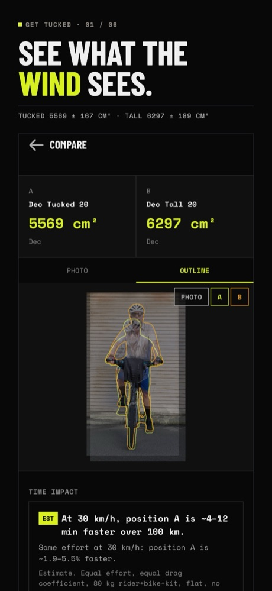
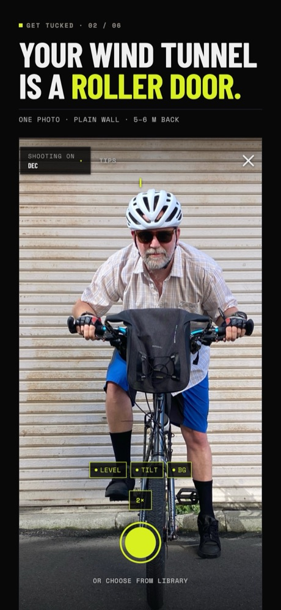
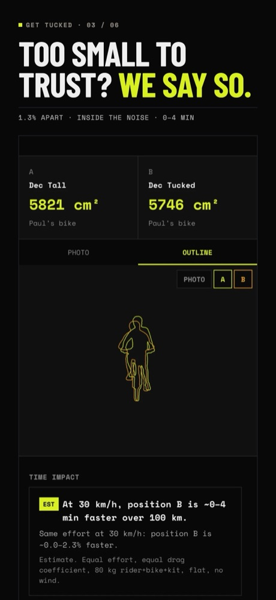
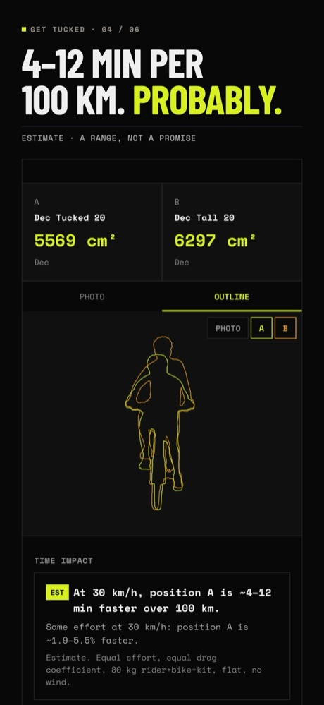
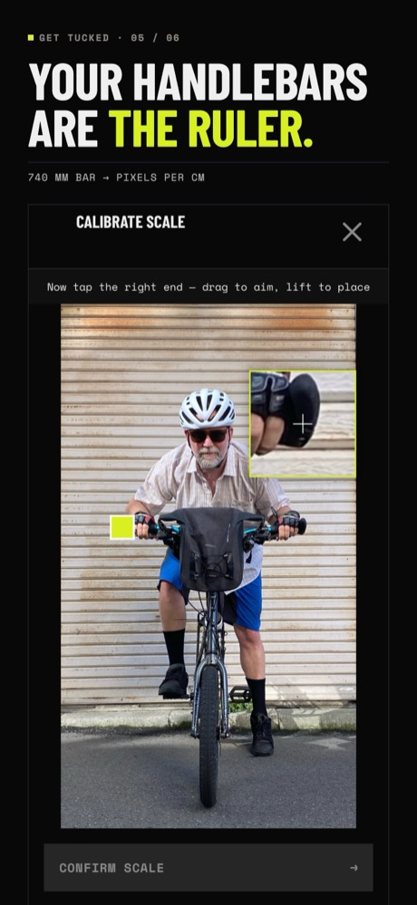
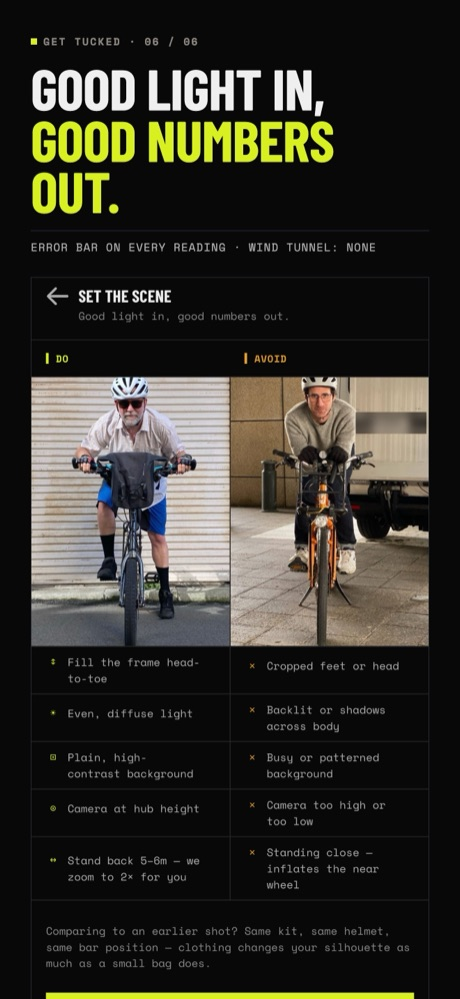

Get Tucked is an iPhone app that measures the frontal area of a cyclist and their loaded bike from one photo against a plain wall. Riders compare positions and bag setups in cm². Each reading carries an error bar, and the app says "indistinguishable" when a difference is too small to trust.
One zip with the fact sheet, six App Store screenshots at 1320 × 2868 px, and the app icon at 1024 px. You may use these images to cover Get Tucked. Please don't alter the screenshots.
Download the press kit (zip, 3 MB) →Cyclists spend a lot on aero gear, and the usual ways to measure it are wind tunnels and dedicated sensors. Get Tucked uses a phone photo. The rider stands on the bike in front of a plain wall, a friend takes a head-on photo from 5 to 6 m back, and the rider taps the two ends of the handlebar. The app segments rider, bike and bags on the phone and reports frontal area in cm².
It measures frontal area, not drag. It does not estimate CdA or model airflow, and its time estimate is a range. The methodology page gives the full method and a list of what the app can't do.






Joe Corbett and Kah Chan, two dads in Wellington, New Zealand, built Get Tucked around day jobs. Imprecisely Accurate Instruments is our little experimental studio.
We are happy to send download codes, answer questions about the measurement math, or get on a call: gettucked.app@gmail.com.